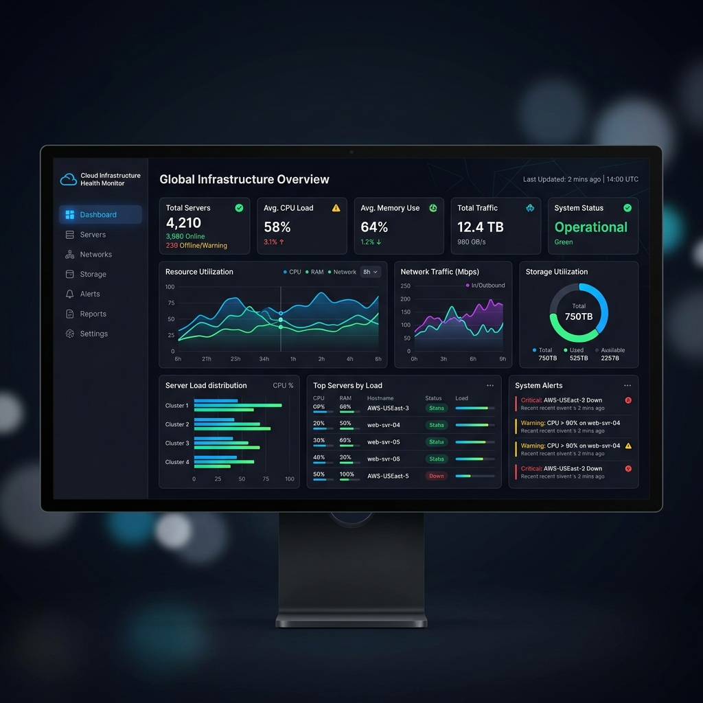
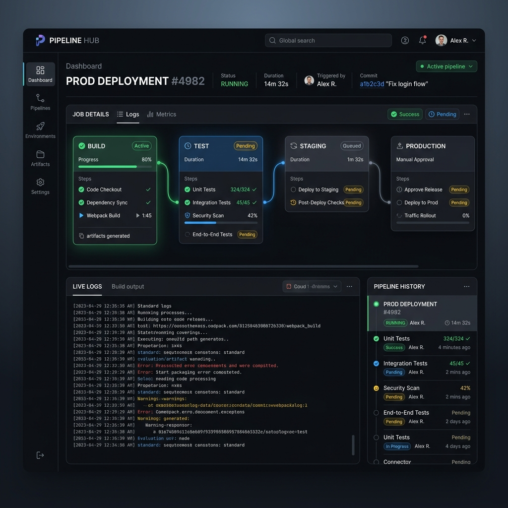
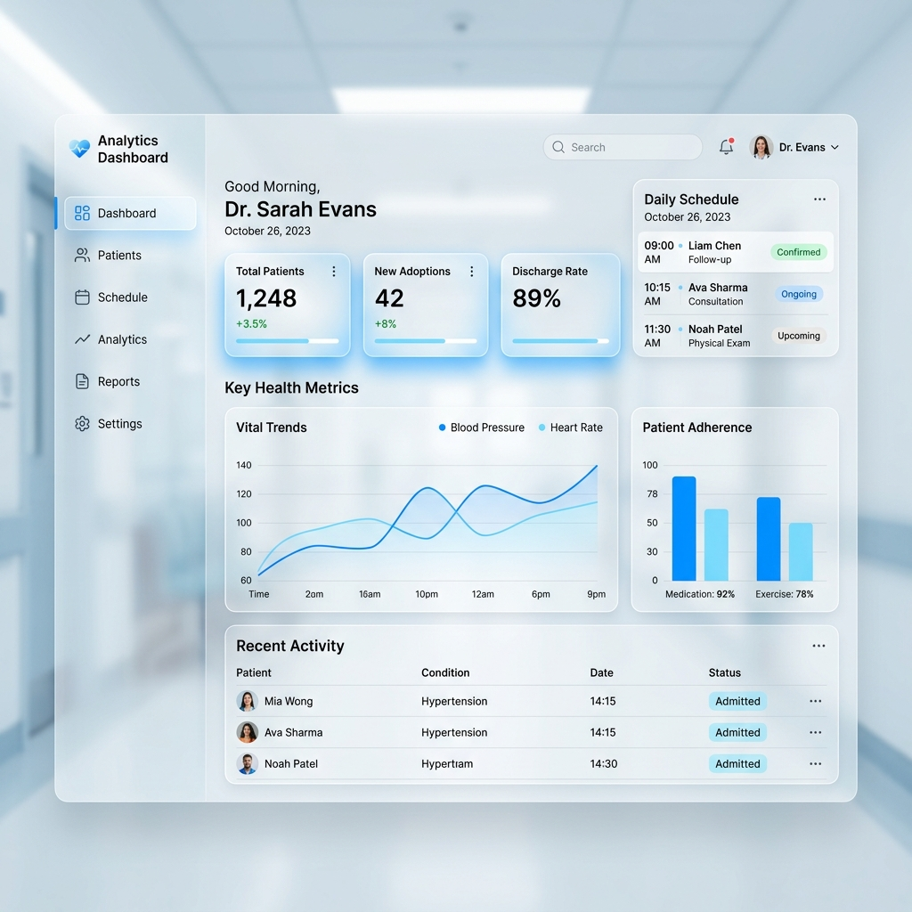

Cloud & Infrastructure
- AWS (EC2, S3, RDS, VPC)
- Docker & Kubernetes
- Terraform
- CI/CD (GitHub Actions)
Cloud Engineer | Infrastructure & DevOps
Membangun infrastruktur cloud yang scalable, reliable, dan secure untuk layanan kesehatan digital.
Lihat Proyek Saya Hubungi SayaSaya adalah seorang Cloud Engineer dengan pengalaman dalam mengelola infrastruktur cloud menggunakan AWS, Docker, dan Terraform. Saya percaya bahwa infrastruktur yang andal adalah fondasi utama dari sistem yang aman dan tersedia 24/7.
"Infrastruktur yang baik tidak terlihat — tetapi ketika rusak, semua orang merasakannya."

Dashboard monitoring infrastruktur cloud real-time dengan visualisasi metrik server, notifikasi otomatis via Slack, dan alerting berbasis threshold.

Pipeline CI/CD otomatis menggunakan GitHub Actions dan Docker. Setiap push ke branch main otomatis build, test, dan deploy ke staging environment.

Dashboard analitik untuk visualisasi data kesehatan — fitur registrasi, jadwal, riwayat, dan konsultasi online. Fokus pada performa dan aksesibilitas.